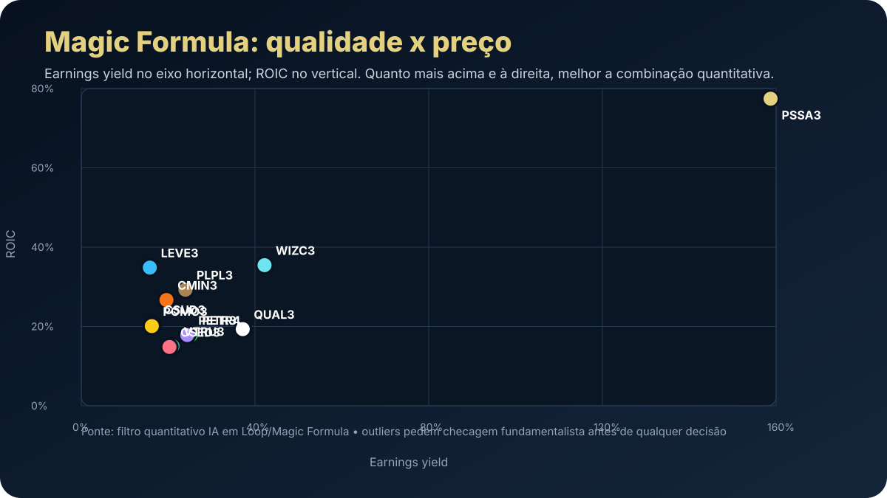

11/05: Magic Formula em modo defesa — qualidade, preço e o custo de oportunidade do CDI
Depois de olhar o macro, a pergunta vira carteira: quais empresas conseguem competir com um juro real elevado sem depender apenas de promessa? A Magic Formula ajuda a transformar essa pergunta em ranking: retorno sobre capital de um lado, lucro/preço do outro.

Dados: filtro quantitativo IA em Loop/Magic Formula. Quanto mais acima e à direita, melhor a combinação quantitativa; outliers precisam de checagem fundamentalista.
O sinal do dia
A leitura de 11/05 parte de uma constatação: com Selic esperada em torno de 13.00% para 2026 e IPCA perto de 4.91%, o investidor não precisa aceitar qualquer risco. O CDI ainda coloca uma barra alta. A bolsa só entra quando a assimetria fica clara.
É aqui que a Magic Formula tem utilidade. Ela não promete prever preço no curto prazo. Ela organiza a busca por empresas que combinam qualidade operacional e preço descontado. Em vez de perguntar “qual ação vai subir amanhã?”, o método pergunta: “qual negócio entrega retorno sobre capital e está barato em relação ao lucro?”.
Leitura IA em Loop: no ambiente atual, o ranking é um funil. Primeiro elimina narrativa fraca; depois exige análise de risco, setor, governança e sustentabilidade do lucro.
Top nomes do filtro quantitativo
O filtro quantitativo mostra uma mistura interessante: seguradoras, saúde, construção, petróleo, mineração, educação e autopeças. Isso é bom porque evita uma carteira monotemática, mas também exige atenção: cada setor carrega um risco diferente.
| Rank | Ticker | Setor | ROIC | Earnings yield |
|---|---|---|---|---|
| 1 | PSSA3 | Seguros | 77.44% | 158.73% |
| 2 | WIZC3 | Seguros/Corretagem | 35.46% | 42.19% |
| 3 | PLPL3 | Construção civil | 29.26% | 23.98% |
| 4 | QUAL3 | Saúde | 19.33% | 37.17% |
| 6 | PETR4 | Petróleo/Gás | 17.85% | 25.25% |
| 6 | CMIN3 | Mineração | 26.67% | 19.61% |
| 9 | PETR3 | Petróleo/Gás | 17.85% | 24.39% |
| 11 | LEVE3 | Autopeças | 34.85% | 15.77% |
PSSA3 aparece como outlier quantitativo, com ROIC e earnings yield muito fortes no filtro analisado. Esse tipo de dado é um convite à análise, não uma ordem de compra. Outliers podem ser oportunidade real, efeito contábil, evento não recorrente ou distorção de base.
Como ler os setores
Seguros/corretagem
PSSA3 e WIZC3 indicam empresas leves em capital e potencialmente resilientes, mas dependem de qualidade da receita e competição.
Petróleo e mineração
PETR4, PETR3, CMIN3 e VALE3 conversam com câmbio e commodities. Podem proteger a carteira, mas aumentam volatilidade.
Saúde e educação
QUAL3, ODPV3, VTRU3 e CSED3 podem parecer baratos, mas exigem cuidado com dívida, regulação e capacidade de repasse.
Indústria/autopeças
LEVE3 e POMO3/POMO4 aparecem por retorno operacional, mas dependem de ciclo, margem e demanda real.
O que entraria no checklist antes de comprar
- Lucro é recorrente? Se o earnings yield vem de evento extraordinário, o ranking pode estar otimista demais.
- Dívida cabe no caixa? Juro real alto transforma alavancagem em risco central.
- Dividendos são sustentáveis? Yield alto sem lucro recorrente vira armadilha.
- Governança é aceitável? Estatal, controlador dominante ou histórico ruim exigem desconto maior.
- Setor está em ciclo favorável? Commodity, crédito, consumo e educação respondem de formas diferentes ao macro.
Decisão prática para a carteira
O ranking sugere que ainda existem ações brasileiras com preço interessante. Mas o custo de oportunidade do CDI impede euforia. A decisão prática é montar uma lista de observação com os nomes que combinam ROIC alto, lucro/preço atrativo e risco compreensível, e só avançar quando a margem de segurança compensar o cenário.
Compra: quando a ação passa no ranking, no balanço e no preço. Espera: quando o ranking é bom, mas o risco setorial ou o preço ainda não compensa. Venda/evitar: quando o aparente desconto depende de lucro não recorrente, dívida pesada ou deterioração estrutural.